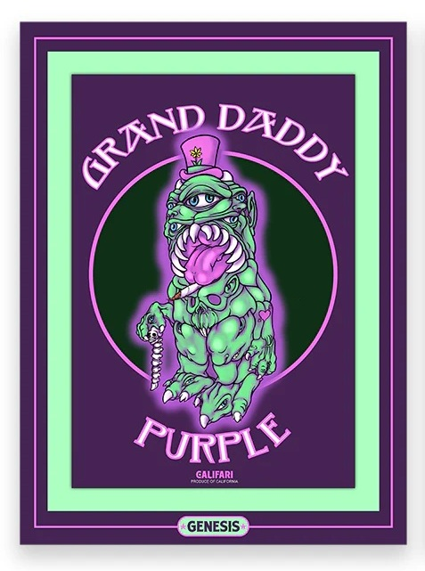

A cannabis-themed NFT trading-card collaboration for Califari's Strain Art Trading Card Series. Ron English contributed Grand Daddy Purple, presented as an animated strain-art NFT with unreleased Bernie Worrell music and animation by Liz Sabol.
This page records the project at a collaboration/project level, with one individual catalogue page for the documented Ron English-related NFT entry.